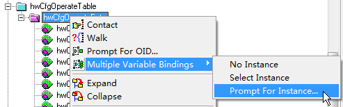

Managing Configuration Files Through the MIB
You can back up the configuration file of a device through the MIB. When the device is faulty, you can use the backup configuration file to restore the device configuration.
The following MIB objects are used to back up the configuration file and restore the device configuration:
Object |
OID |
MIB File |
|---|---|---|
hwCfgOperateEntry |
1.3.6.1.4.1.2011.6.10.1.2.4.1 |
HUAWEI-CONFIG-MAN-MIB |
hwSysReboot |
1.3.6.1.4.1.2011.5.25.19.1.3.4 |
HUAWEI-SYS-MAN-MIB |

This example uses the MIB Browser as the NMS software to illustrate the operations. If you use other NMS software, see the documentation of the specific software.
Prerequisites
Before using the MIB to manage configuration files, you have completed the following tasks:
- Configure the device to connect to the NMS through SNMP.
- Set parameters of the MIB Browser and connect the MIB Browser to the device.
- Compile related MIB files using the MIB Compiler and load the MIB files.
- Configure a file server to save the backup configuration file and ensure that there are reachable routes between the device and the file server. In this example, an FTP server is used as the file server.
Procedure
Backing Up the Configuration File Through the MIB
Search for hwCfgOperateEntry. You can search for an object based on its location in the MIB tree. However, it is difficult to locate an object if a large number of MIB files are imported to the MIB Browser. In this case, you can press Ctrl+F to locate an object, as shown in Figure 1.
- Set parameters for the MIB object. hwCfgOperateEntry is a table object. Before setting parameters for the MIB object, you must perform multiple variable bindings. The operations are as follows:
- Create a table instance.Figure 2 Creating a table instance

- Specify an instance ID. Assume that the ID is set to 1. When specifying an instance ID, ensure that the instance ID is not used by other instances.Figure 3 Specifying a table instance ID

Delete unnecessary sub-objects from the table and set the values of the remaining sub-objects. After the operations are complete, the operation interface shown in Figure 4 is displayed. Change the item marked by an arrow to Set.
To delete or set a sub-object, right-click the sub-object and select an operation from the displayed shortcut menu.
- Create a table instance.
- After setting parameters for the MIB object, click Set and upload the configuration file vrpcfg.zip to the FTP server. Check whether the configuration file vrpcfg.zip exists in the working directory of the FTP server. If so, the backup is successful. If not, the backup fails and you need to repeat the preceding steps.
Restoring the Configuration File Through the MIB
- Use hwCfgOperateEntry to download the configuration file to the device and specify it as the configuration file for next startup. To distinguish the backup configuration file from the original configuration file, rename the backup configuration file, for example, vrpcfg1.zip.
- Perform multiple variable bindings. Create a table instance and set the instance ID. The operations are similar to those in Backing Up the Configuration File Through the MIB.
- Set parameters for the table instance. After the operations are complete, the operation interface shown in Figure 5 is displayed.
- Click Set, download the backup configuration file to the device, and specify it as the configuration file for next startup.
- Use hwSysReboot to restart the device.
- Search for hwSysReboot. You can search for an object based on its location in the MIB tree or press Ctrl+F to search for the object.
- Enter the single object setting interface. hwSysReboot is a single object. Right-click the object and select Set from the shortcut menu.Figure 6 Entering the single object setting interface

- Set the restart range.In the dialog box that is displayed, set the restart range to rebootWholeRoute(2) (restarting all devices), as shown in Figure 7.
The numbers 1, 2, and 3 in the figure indicate the sequence in which operations are performed.
- After the configurations are complete, click
 in the upper left corner of the dialog box to perform the restart operation.
in the upper left corner of the dialog box to perform the restart operation.
- Verify the configuration. After the device restarts, run the display startup command on the device to check whether the startup configuration file is changed.
<HUAWEI> display startup MainBoard: Configured startup system software: flash:/XXXXXXXXXX.cc Startup system software: flash:/XXXXXXXXXX.cc Next startup system software: flash:/XXXXXXXXXX.cc Startup saved-configuration file: flash:/vrpcfg.zip Next startup saved-configuration file: flash:/vrpcfg.zip Startup paf file: default Next startup paf file: default Startup patch package: NULL Next startup patch package: NULL Startup feature software: NULL Next startup feature software: NULL Startup extended-system software: flash:/XXXXXXXXXX.cch Next startup extended-system software: flash:/XXXXXXXXXX.cch